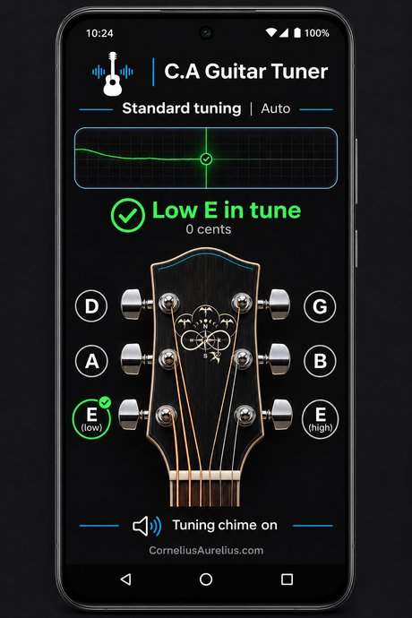

C.A Guitar Tuner
Precision tuning for all six acoustic guitar strings. Follow the live pitch tracer and get a clear green tick and three-tone chime when each string is in tune.
Download / Install Guitar Tuner100% free · No ads · No sign-up · No payments
Start tuning
- Tap Download / Install Guitar Tuner, or use it online.
- Tap Start microphone and allow microphone access.
- Pluck one open string at a time.
Install the upgraded V4 tuner as a web app on compatible phones, tablets and computers. On Android, use Chrome’s Install app option; on iPhone or iPad, use Safari’s Share → Add to Home Screen. On desktop, use the browser’s install option if available. No APK download is required. The installed app can open from its own icon; offline use is available after the app files have been cached.
How does it work?
Pluck one string in Auto mode or tap a string to select it. Follow Tighten or Loosen. A green tick and optional chime confirm when the string is in tune.
Standard tuning runs from low to high as E–A–D–G–B–E. The tuner processes microphone audio locally on your device. Microphone permission is required. Confirmation requires stable pitch within ±2 cents for half a second.
